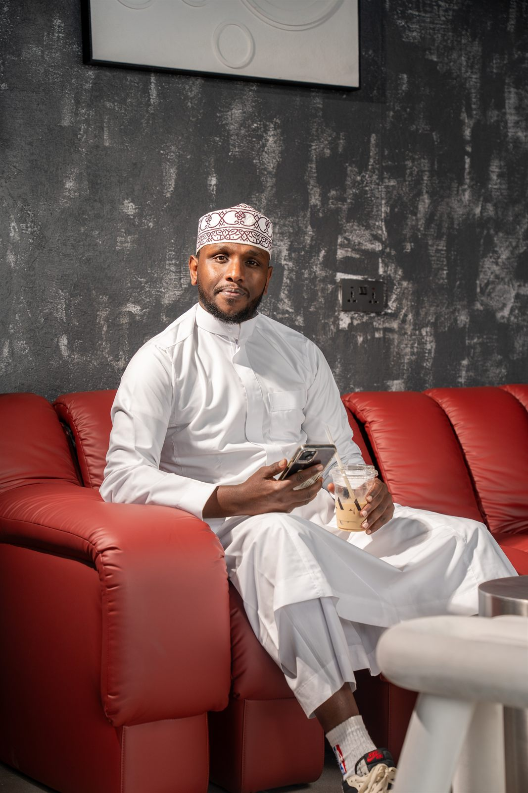
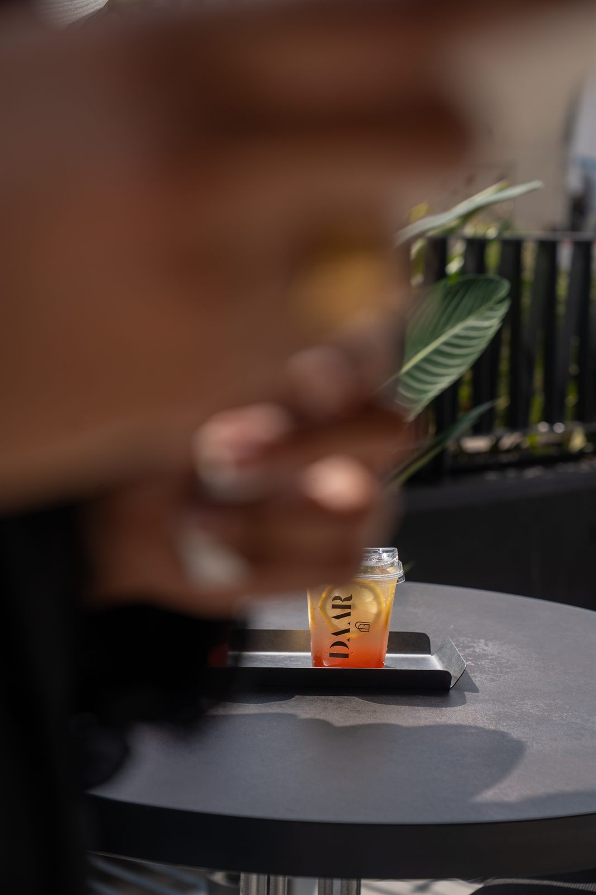
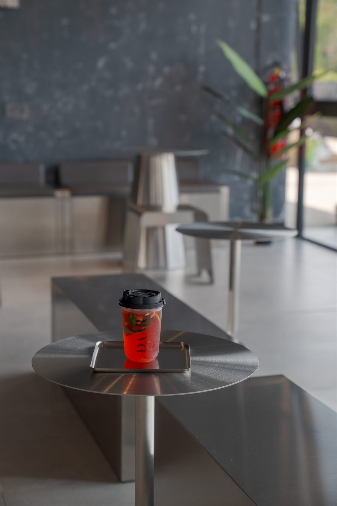
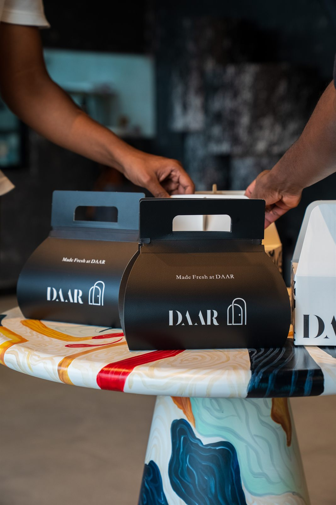
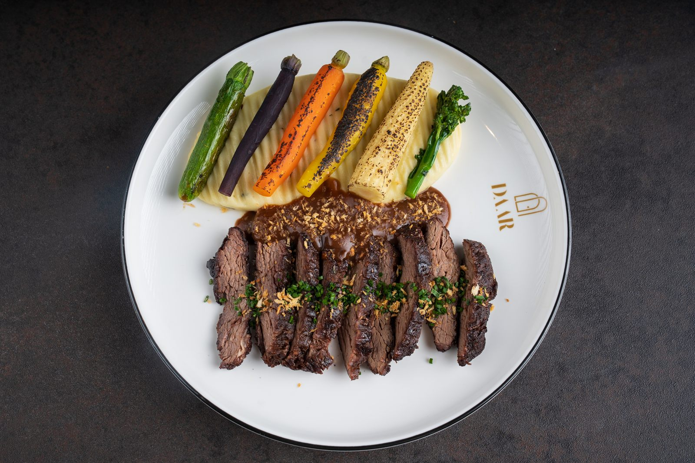

Raspberry & Pistachio Tart
KES 650Almond frangipane, fresh raspberries, Sicilian pistachio.
Style Board · Phase 0 · Nairobi
01 — Direction
The palette isn't invented — it's photographed. Daar's walls are troweled grunge plaster, the furniture is brushed steel, the banquettes are a hard red, and the tables are poured paint. The brand PDF supplies oxblood and tan. Everything below comes from those two sources and nothing else.
The arch is the system. The door in your logo becomes the shape of every photograph, card and button on the site. One idea, applied relentlessly — that's what makes a site look designed rather than assembled.
Texture is generated with SVG fractal noise rather than image files: no payload, resolution-independent, and it tints to any surface. Important when most of your visitors are on mobile data.


Nairobi · Café & Bakery
Baked each morning behind the door on Ngong Road.
02 — Palette
Paint-marble — section dividers & category headers
Rebuilt in CSS from your tables, so it scales and animates. Used sparingly — a divider between sections, never behind text.
03 — Typography
Cardamom, butter and time. Everything at Daar is proved slowly and baked the same morning it is served — which is why some things sell out before noon, and why we think that's a fair trade.
Three families is a real payload cost. Droppable to two by using Jost for body text — say the word and I'll compare them side by side on a phone.
04 — Form



Every photograph on the site sits inside the doorway. Cheap to implement, impossible to mistake for anyone else.
05 — The centrepiece
Almond frangipane, fresh raspberries, Sicilian pistachio.

Double shot, cold milk, poured over ice.

Laminated overnight, hand-knotted, baked at six.

Burnt top, soft centre. Twelve a day.

Slow tomato, baked eggs, sourdough soldiers.

Dark chocolate, twisted twice, glazed warm.
Item names and prices are placeholders. Photographs, names, prices, badges and the sold-out state are all admin-controlled — the owner sets every one of these from his phone.

06 — Story
Editorial sections run on oxblood with generous margins and a single arched image. Long-form copy stays on bone for readability; oxblood is reserved for moments, not paragraphs.